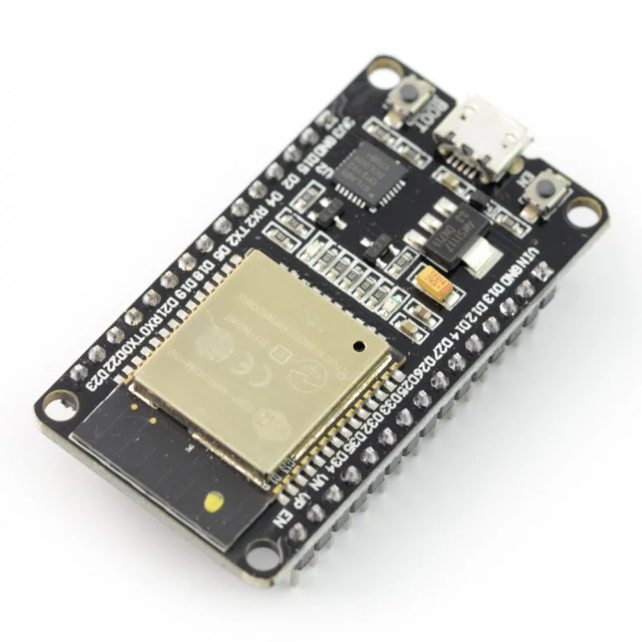
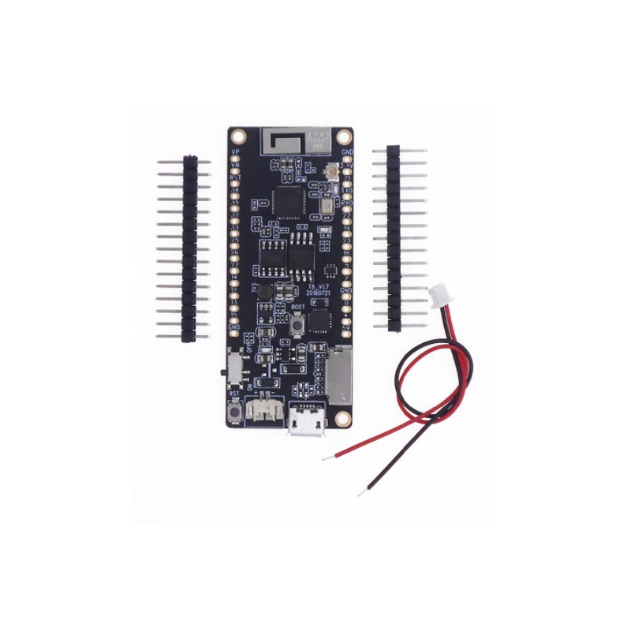
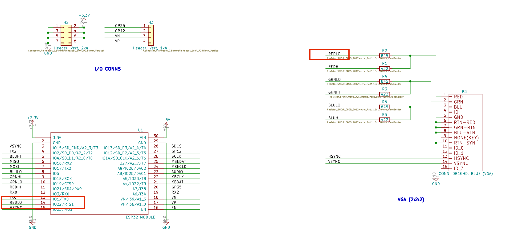
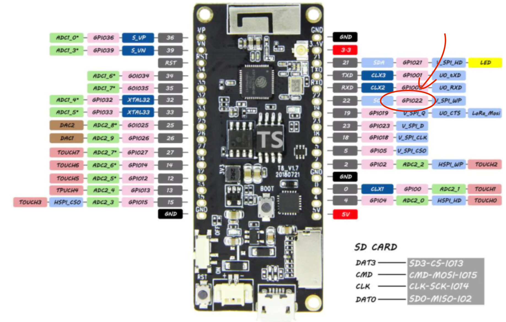
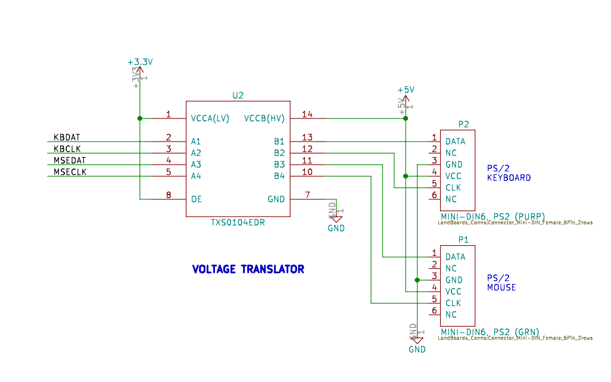
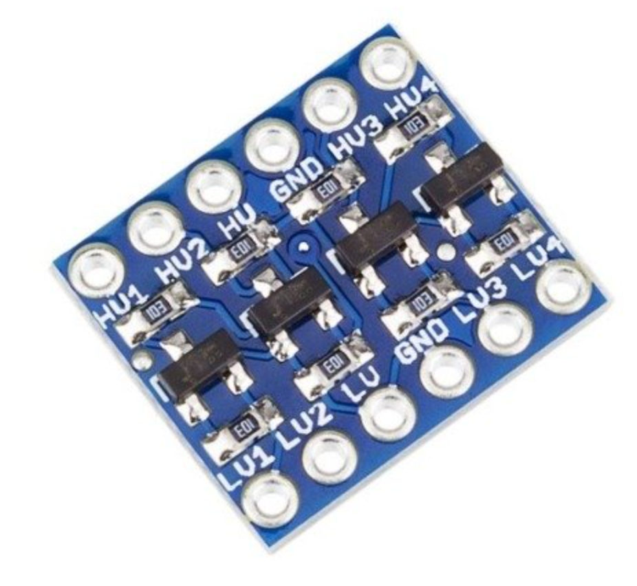
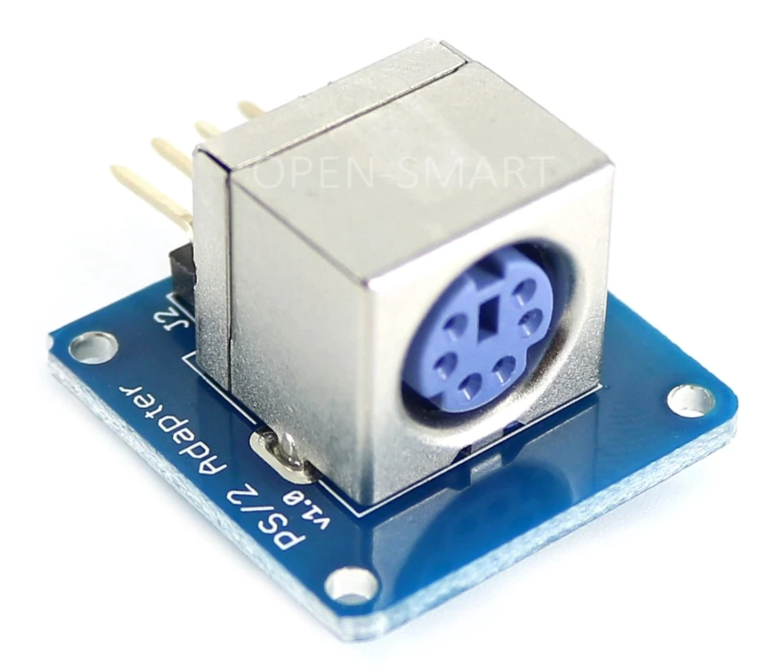
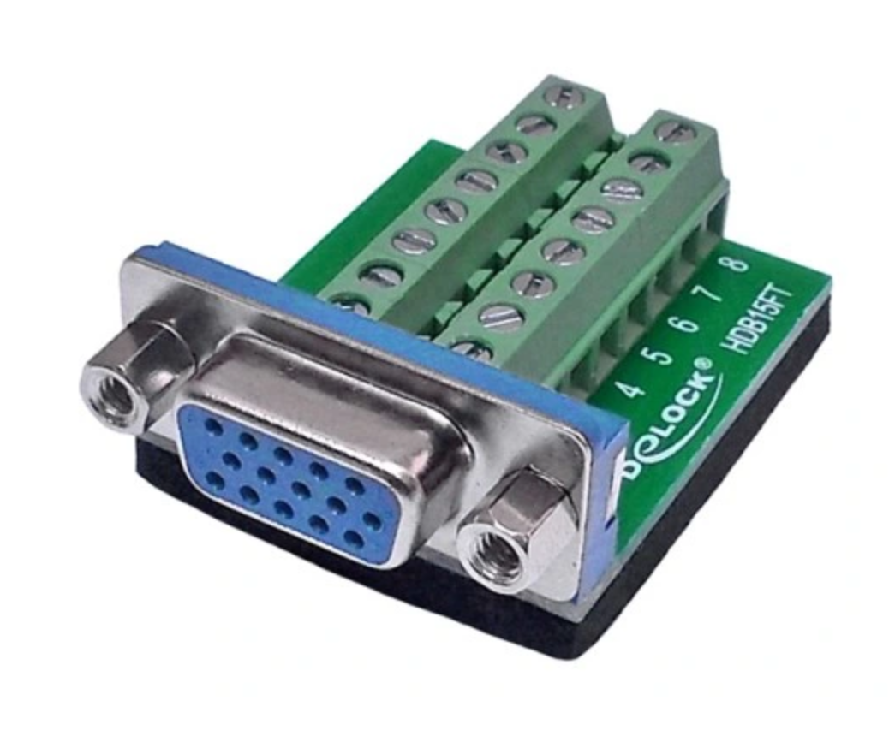

Jakieś dwa tygodnie temu natknąłem się na artykuł Emulating the IBM PC on an ESP32. Opisano w nim bibliotekę FabGL, stworzoną przez pana Fabrizio Di Vittorio, oraz kilka bazujących na niej projektów. Sama biblioteka przeznaczona jest do użytku z mikrokontrolerami z rodziny ESP32 i pozwala na programowe generowanie sygnału wideo (VGA) oraz obsługę myszki i klawiatury poprzez (bardzo popularne jeszcze 20 lat temu) złącze PS/2. Wśród projektów zbudowanych z wykorzystaniem tej biblioteki znajdziemy emulatory takich maszyn jak Altair 8800, Commodore (VIC 20) czy w końcu tytułowy IBM PC.
Nie będę ukrywał że projekt, zwłaszcza emulator IBM PC na którym można uruchomić stary MS-DOS jak i Windows 3.11, bardzo przypadł mi do gustu. Od razu po przeczytaniu artykułu, udałem się więc, na stronę pana Di Vittorio na Tindie żeby zakupić przygotowaną przez niego płytkę PCB, zawierającą sam mikrokontroler jak również złącza VGA, 2x PS/2 oraz slot karty microSD. Niestety spóźniłem się i jedyne co mogłem zrobić to wpisać się na długą listę oczekujących. Nic straconego, pomyślałem, w końcu na stronie projektu autor podaje dość długą listę płytek kompatybilnych z jego biblioteką. Dla hobbysty amatora, takiego jak ja płytka TTGO VGA32 1.2 wydaje się być całkiem dobrym wyborem. Płytka ta jest dostępna w Polsce jedynie za pośrednictwem Aliexpressu, niestety czas czas realizacji zamówienia wynosi około miesiąca. Tak wiec zamówiłem tą płytkę, nie przestając jednocześnie szukać sposobu na na znacznie szybszą realizację tego projektu.
Płytka sprzedawana przez pana Di Vittorio posiada układ ESP32 WROVER-E z 16MB pamięci Flash i 4MB pamięci PSRAM. Niestety układ ten jest trudno dostępny w naszym kraju. Co gorsza na rynku jest całe mnóstwo płytek z wymaganą ilością pamięci Flash, ale bez pamięci PSRAM która jest niezbędna do uruchomienia emulatora PC. Poniżej przykład takiej niedziałającej płytki:  Ostatecznie po dwóch dniach poszukiwań natknąłem się na następujący układ:  Poniżej zamieszczam link do sklepu. Układ ten posiada co prawda tylko 4MB pamięci Flash, ale moje testy pokazały że to w zupełności wystarczy. Uwaga: układ przychodzi w postaci niezlutowanej (tak jak to przedstawia obrazek).
Następnym krokiem jaki musiałem wykonać było znalezienie schematu jednej z
kompatybilnych płytek. Nie nastręczyło mi to wielu problemów, niezbędny schemat
był zamieszczony na stronie land-boards.com jako ESP32 VGA Rev3.
Ponieważ układ ESP32, użyty w schemacie, ma nieco inny układ wyprowadzeń niż układ zakupiony przeze mnie, musiałem dość mocno uważać podczas łączenie poszczególnych
komponentów.
Przykładowo, na oryginalnym schemacie pin REDLO podłączony jest do pinu 14 mikrokontrolera, który odpowiada portowi IO22:

Oznacza to tyle że po zamianie układu,
linia REDLO nadal powinna pozostać połączona z portem IO22. W przypadku
zakupionej płytki port ten nosi nazwę GPIO22:

Postępując w ten sposób dalej, jedyny problem na który się natknąłem
było podłączenie pinów MISO i MOSI karty microSD.
Ostatecznie pin MISO podłączyłem do pinu GOIO35, a pin MOSI do pinu GPIO12.
Taka zmiana mapowania wymaga niestety modyfikacji kodu
emulatora, mianowicie funkcja setup w pliku PCEmulator musi zostać zmieniona:
if (!FileBrowser::mountSDCard(false, "/SD", 8))
ibox.message("Error!", "This app requires a SD-CARD!", nullptr, nullptr);na:
/* SIGNATURE:
bool mountSDCard ( bool formatOnFail,
char const * mountPath,
size_t maxFiles = 4,
int allocationUnitSize = 16 * 1024,
int MISO = 16,
int MOSI = 17,
int CLK = 14,
int CS = 13
)
*/
if (!FileBrowser::mountSDCard(false, "/SD", 8, 16*1024, 35, 12, 14, 13))
ibox.message("Error!", "This app requires a SD-CARD!", nullptr, nullptr);Przy okazji podczas pierwszego uruchomienia warto również odkomentować linię:
// uncomment to format SD!
//FileBrowser::format(fabgl::DriveType::SDCard, 0);Bardzo ważnym elementem którego nie możemy pominąć jest konwerter napięcia 3.3V a 5V
(ang. level shifter),
występujący między ESP32 a portami PS/2. Niestety myszka i klawiatura pracuje na
wyższym napięciu 5V, które dla ESP32 może okazać się zabójcze:

Ja wykorzystałem w moim projekcie tani 4 kanałowy konwerter
ze sklepu ABC-RC. Generalnie działanie konwertera jest banalnie proste, łączymy
piny GND konwertera z pinami GND kontrolera oraz ze sobą nawzajem, pin HV konwertera podłączamy do pinu 5V ESP32, a pin LV
konwertera do pinu 3.3V. Piny HVx podłączamy do gniazd PS/2 a
odpowiadające im piny LVx do wejść mikrokontrolera:

Jako gniazda PS/2 wykorzystałem mini układy o wdzięcznej angielskiej nazwie ps/2 breakout board. Generalnie tego typu gniazda są ciężko dostępne, dlatego większość ludzi po prostu rozcina kabel od myszki i klawiatury i dolutowuje tam goldpiny. Alternatywnie można próbować owijać cynowany drut wokół pinów wtyczki PS/2. Wszystkie chwyty dozwolone. Dla tych którzy lubią czekać stosowny link do Aliexpressu. 
Co do karty microSD, po prostu dolutowałem kilka przewodów do adaptera:

Jako gniazdo VGA wykorzystałem wtyk podobny do tego:  Możemy go znaleźć szukając po haśle “VGA TERMINAL BLOCK”. Aczkolwiek muszę przyznać że ceny na Allegro są z kosmosu, podobna wtyczka na Alim kosztuje maksymalnie 10 złotych.
Ostatecznie cały układ wygląda następująco:

Uruchomienie: 1) Należy wykonać instrukcje podawane przez pana Fabrizio Di Vittorio na jego kanale YT 2) Układ bez karty mikroSD podłączamy kablem USB do komputera i programujemy. Po restarcie układu, powinien pojawić się komunikat że karta SD jest wymagana. 3) Odłączamy układ od zasilania, wkładamy kartę SD i uruchamiamy ponownie. Karta powinna zostać wykryta a my powinniśmy zostać poproszenie o hasło do WiFi.
Z jakiegoś powodu układ nie działał stabilnie przy zasilaniu USB (np. były problemy z klawiaturą). Problem znikł gdy podłączyłem układ do zewnętrznego zasilacza 5V (plus zasilacza należy podłączyć do pinu 5V ESP32).
Jeżeli będziecie mieli kłopoty z uruchomieniem układu możecie zadawać pytania poprzez forum 4programmers (tagując @0xmarcin) lub pisząc do mnie email 0xmarcin małpa gmail.com.
Na koniec kilka zdjęć działającego emulatora oraz jedna uwaga:


Emulator działa zadziwiająco dobrze ale nie idealnie. Podczas testów okazało się że niektóre aplikacje Win 3.11 potrafią otwierać się naprawdę powoli (czasy rzędu 10 lub 15 sekund). Niestety wiele aplikacji potrafi zawiesić emulator, w tym spora część dołączonych gier MS-DOS. Generalnie nie jest to ukończony produkt ale raczej wersja beta. Generowany przez ESP32 obraz również nie jest krystalicznie czysty (choć tutaj winna może być słaba jakość połączeń na płytce stykowej).
Ostatecznie jest to projekt który wykonuje się dla zabawy. Jeżeli ktoś się chce po prostu pobawić Win 3.11 to można to zrobić wprost z przeglądarki archive.org/details/win3_stock.